Gastronomía de las maravillas
La gastronomía es una expresión cultural que refleja la historia y tradiciones de cada región. A continuación, presentamos los platos más representativos de las zonas donde se ubican las Siete Maravillas del Mundo Moderno.
Machu Picchu - Perú
La cocina peruana es reconocida mundialmente por su diversidad. En los Andes, la alimentación se basa en ingredientes ancestrales procesados con técnicas que fusionan lo tradicional y lo moderno.
- Ceviche: Pescado fresco marinado en cítricos.
- Lomo saltado: Carne de res salteada con vegetales al estilo oriental.
- Causa limeña: Masa de papa amarilla con ají y diversos rellenos.
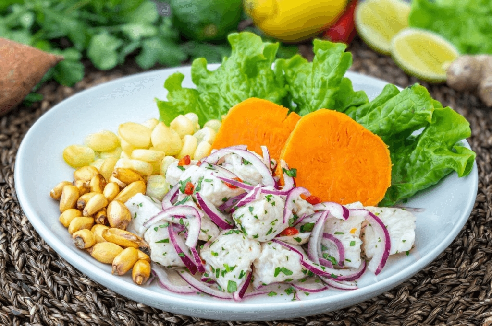
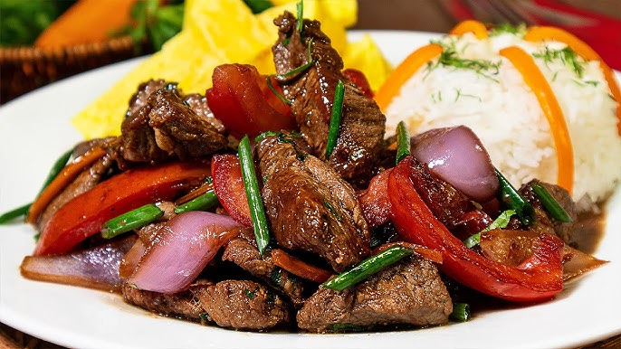
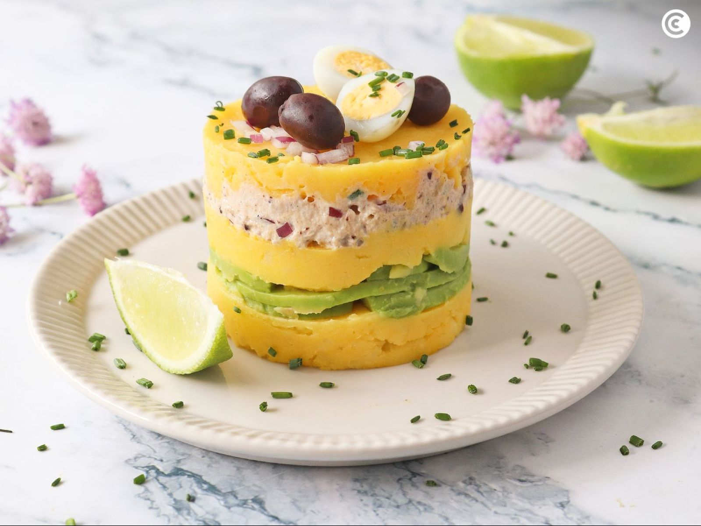
Chichén Itzá - México
La gastronomía yucateca es una joya culinaria con fuertes raíces mayas. Se caracteriza por el uso de especias intensas y métodos de cocción lentos y tradicionales.
- Cochinita pibil: Cerdo adobado en achiote cocido en horno de tierra.
- Tacos: El emblema nacional con infinitas variedades de guisos.
- Guacamole: Salsa cremosa a base de aguacate, chile y tomate.
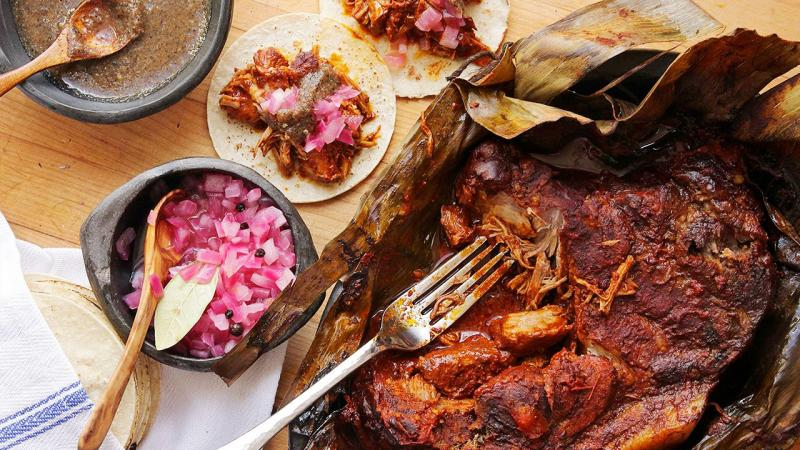
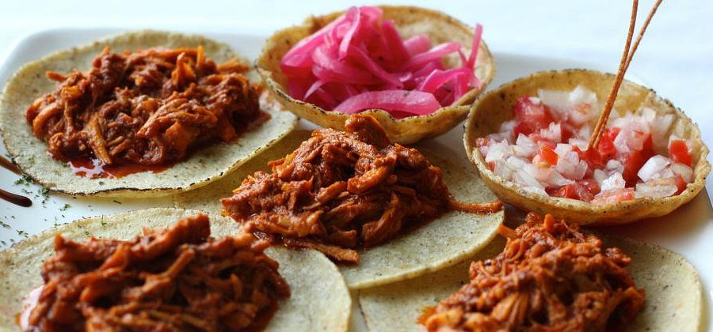
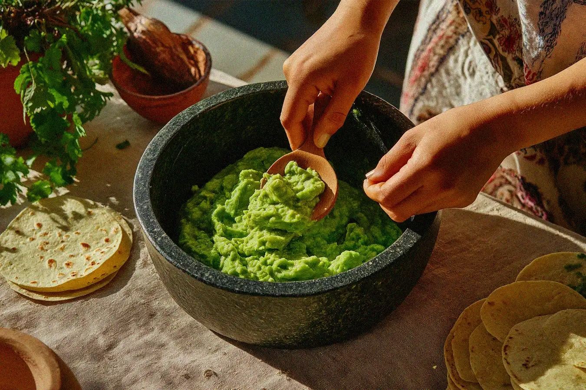
Cristo Redentor - Brasil
La cocina brasileña es un mosaico de influencias africanas y europeas. Sus platos son contundentes y reflejan la alegría y abundancia de sus tierras tropicales.
- Feijoada: Guiso de frijoles negros con diversos cortes de carne.
- Churrasco: Variedad de carnes asadas a la brasa en espadas.
- Pão de queijo: Deliciosos panecillos horneados a base de queso y harina.
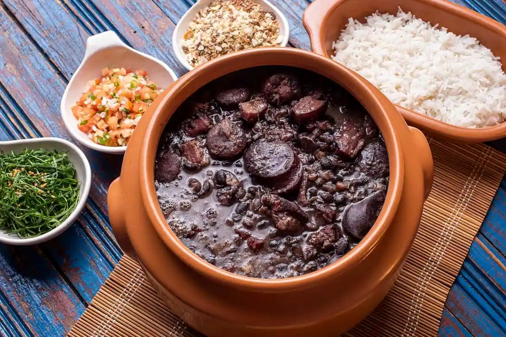

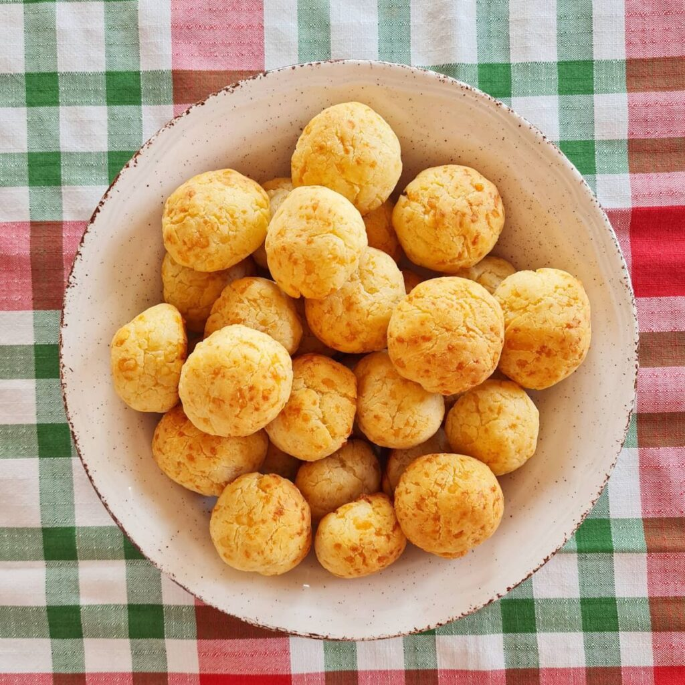
Coliseo Romano - Italia
La gastronomía italiana destaca por la excelencia de sus ingredientes simples. En Roma, las recetas milenarias siguen siendo la base de la dieta mediterránea.
- Pasta: Recetas clásicas como Carbonara o Cacio e Pepe.
- Pizza: Masa artesanal con ingredientes frescos de la región.
- Lasagna: Capas de pasta, carne y queso horneadas a la perfección.
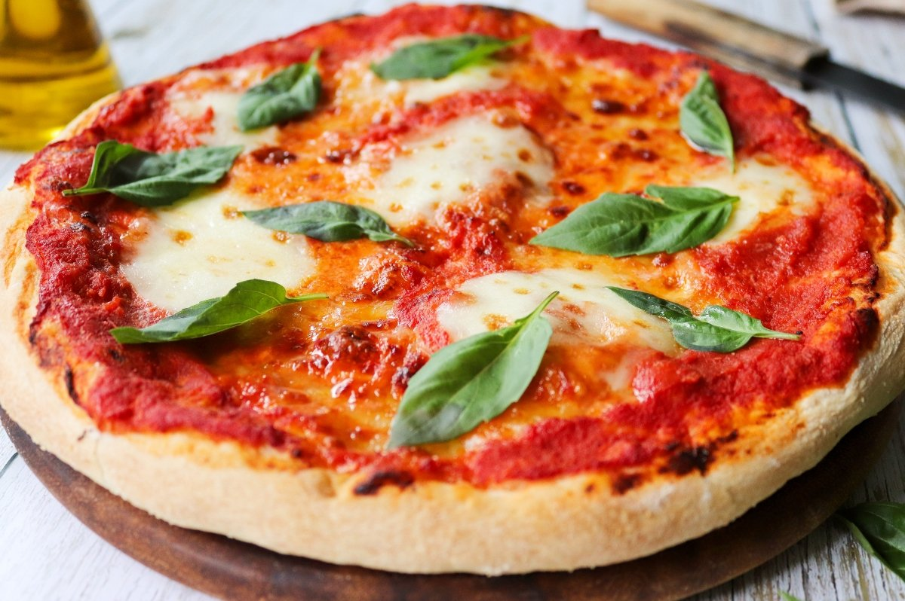
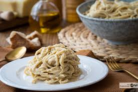
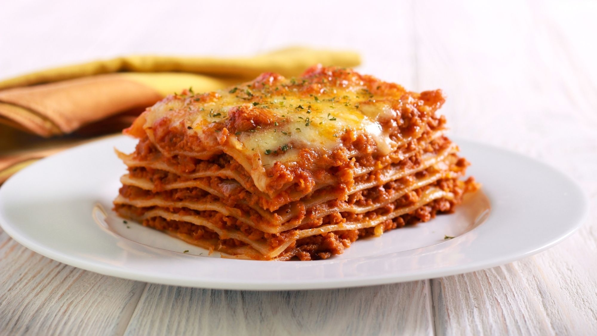
Taj Mahal - India
Un festival de especias y aromas. La cocina de la India es una experiencia sensorial completa, donde cada región aporta sus secretos y mezclas únicas de sabores.
- Pollo tikka masala: Pollo marinado en especias y salsa de tomate cremosa.
- Curry: Gran variedad de estofados condimentados con cúrcuma y comino.
- Naan: Pan plano tradicional perfecto para acompañar cualquier plato.
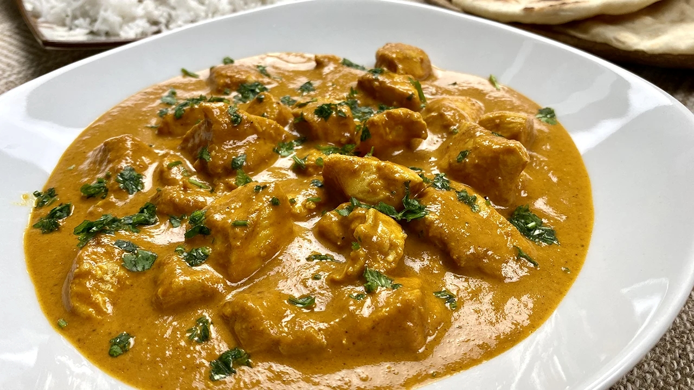
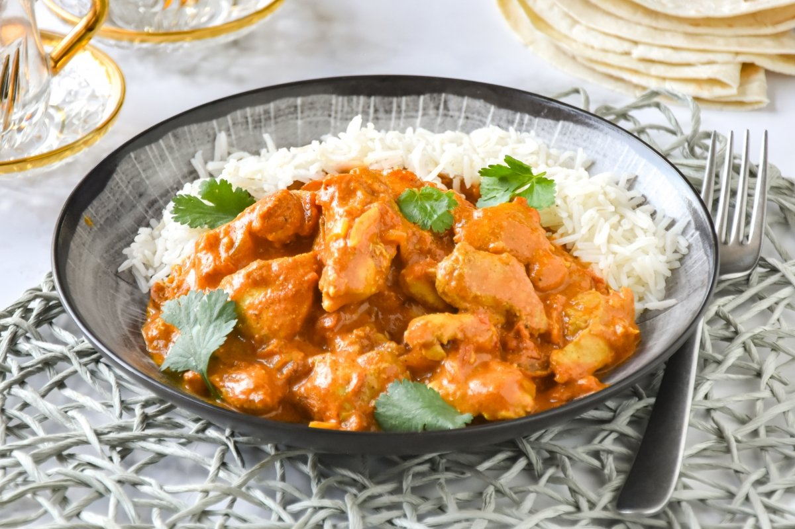
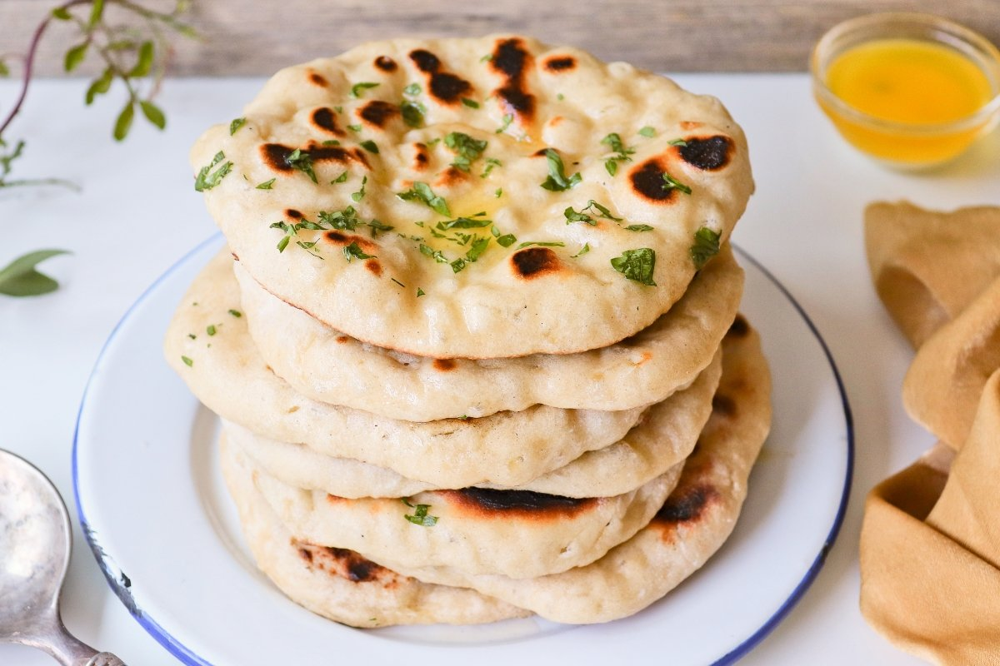
Petra - Jordania
La cocina del Medio Oriente se basa en la hospitalidad. Utiliza legumbres, aceites de oliva y especias aromáticas para crear platos saludables y llenos de historia.
- Falafel: Croquetas fritas de garbanzos triturados con hierbas.
- Hummus: Puré suave de garbanzos con tahini y limón.
- Shawarma: Carne asada verticalmente servida en pan de pita.
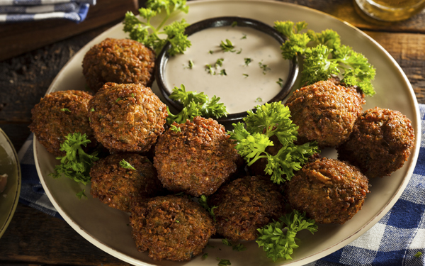
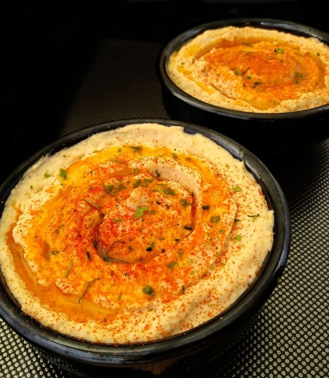
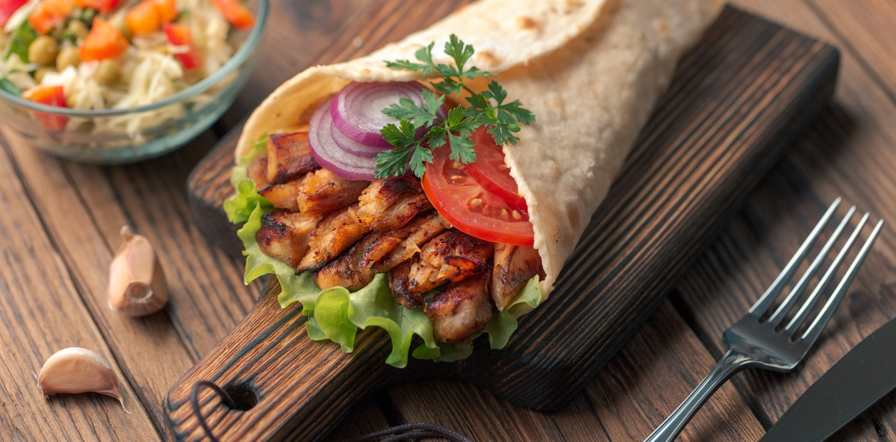
Gran Muralla China - China
Una de las gastronomías más antiguas y sofisticadas. Busca el equilibrio perfecto entre sabores, texturas y colores en cada bocado.
- Pato pekinés: Pato asado con piel crujiente servido con crepas.
- Dim sum: Variedad de bocados pequeños cocidos al vapor o fritos.
- Arroz frito: Salteado al wok con vegetales, carnes y especias.
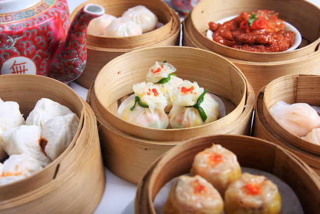
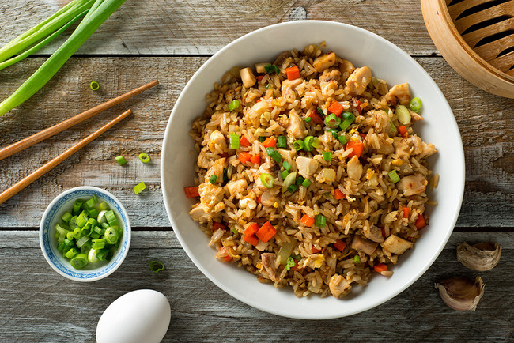
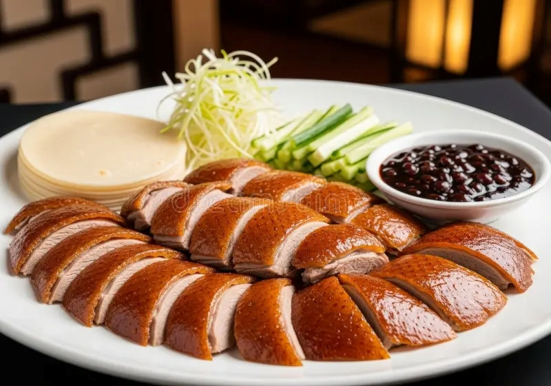